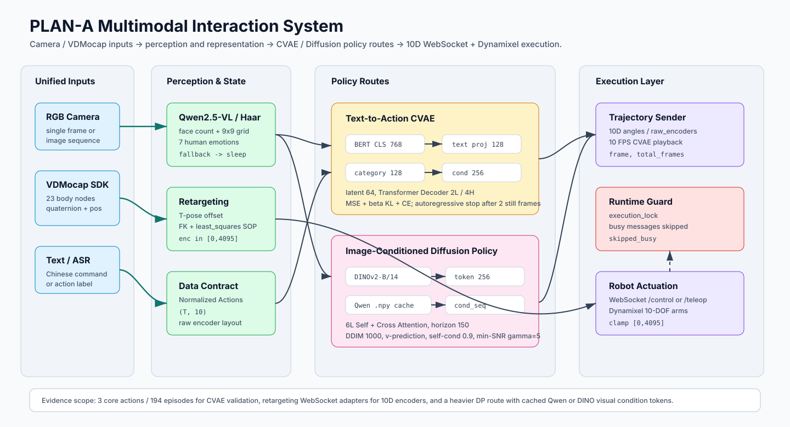

The Chinese University of Hong Kong
2025.09 - 2026.07Department of Computer Science and Engineering · M.Sc. in Computer Science
Honor: M.Sc. in Computer Science Programme Excellent Student Scholarship, The Chinese University of Hong Kong
I am a M.Sc. student at The Chinese University of Hong Kong (CUHK). I build embodied AI systems that connect teleoperation, multimodal perception, policy learning, and real-robot deployment.
My recent work spans xArm6 + LEAP Hand manipulation, VLA fine-tuning, diffusion-policy style robot control, humanoid perception, dataset tooling, and deployment pipelines that run beyond offline benchmarks.
Current focus: real-robot manipulation systems with traceable data flow, policy serving, sensor feedback, and recovery logic.
Department of Computer Science and Engineering · M.Sc. in Computer Science
Honor: M.Sc. in Computer Science Programme Excellent Student Scholarship, The Chinese University of Hong Kong
School of Intelligent Systems Engineering · B.Eng. in Intelligent Science and Technology · GPA 3.7 / 4.0
Major honors: SYSU Outstanding Undergraduate Third-Class Scholarship, Guangdong Soong Ching Ling Scholarship, Jieyang Outstanding Student Cadre
Algorithm Intern · Social-robot interaction and real-robot manipulation systems
VLM Navigation Intern · NavLLaVA visual-language navigation decision model
r=16, reducing memory use by 42% and improving navigation success by 6.8 pp.
Embodied AI / Real-Robot Deployment Project, 2026
Built a real-robot pipeline on xArm6 + LEAP Hand with D435 / fingertip cameras: stand a coin, verify the upright state with HSV tilt and hand-joint conditions, hot-switch from a stand checkpoint to a place checkpoint, run grasp verification, execute a rule-based half-arc move, release into a white box, return, and loop to the next episode.

Algorithm Intern Project, 2026
Engineered PLAN-A as a social-robot multimodal interaction stack that routes camera and VDMocap inputs through Qwen2.5-VL / OpenCV perception, Text-to-Action CVAE, image-conditioned Diffusion Policy, and a 10D WebSocket + Dynamixel execution layer. The validated report path uses 194 episodes across waving / reaching / sitting with a shared Normalized Actions (T,10) contract. The CVAE branch encodes BERT-base-chinese CLS to 128D, fuses a 128D category embedding, samples a 64D latent, and decodes with a 2-layer / 4-head Transformer Decoder. The DP branch conditions a 6-layer self+cross-attention action transformer on DINOv2-B/14 or cached Qwen-VL 256D tokens, using DDIM 1000-step v-prediction with self-conditioning 0.9 and min-SNR gamma 5. Runtime streams trajectories at 10 FPS with an execution lock and skipped_busy guard, while retargeting maps VDMocap 23-node pose into [0,4095] encoders through T-pose calibration. Reported scope: 535.95 best CVAE val loss, 100% category sanity accuracy, 2.5-5.5s documented latency, and ~9x Qwen-cache training speedup; no controlled CVAE-vs-DP task-success benchmark is claimed.

Algorithm Intern Project, 2026
Fine-tuned Physical Intelligence’s π0.5 Vision-Language-Action model on the LIBERO benchmark using LoRA on a single RTX 4090. Designed a freeze-filter strategy matrix spanning 2.6M, 18M, and 305M trainable parameters; fixed action-expert LoRA leakage, norm_stats reuse, and checkpoint-aware evaluation logging. Achieved 94.2% mean success rate across 2000 episodes (+2.0 pp over official, +18.2 pp over OpenVLA-7B), with Long-10 reaching 88.8%.

Robot Learning Project, 2026
Built a reproduction-oriented VLA pipeline for an ALOHA/LeKiwi tabletop manipulation setup, covering LeRobot data collection design, GEAR-style metadata conversion, DreamZero embodiment registration, LoRA fine-tuning protocol, and WebSocket-based action-chunk inference. The project emphasizes practical robot-learning details often missed in paper-level reproductions: 3-view camera-order validation, state/action schema audit, gripper normalization, receding-horizon execution, safety clamping, and rollout-video based evaluation.

Algorithm Intern Project · Jetson AGX Orin, 2026
Built a full-stack multimodal perception & grasping pipeline for a humanoid robot on Jetson AGX Orin: 3-tier cascaded VAD boosting far-field Silero hit rate from 0% → 92%; dual-path NLU + VLM-guided SAM3 segmentation raising mask success from 9% → ≥90%; 8-state closed-loop FSM with 7 guard mechanisms and 3D multi-feature grasp verification (median/P25/frac voting). Diagnosed and fixed a P0 cascading bug via 7-step root-cause audit.